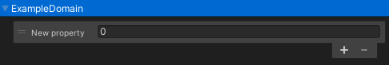

- Generated by
 1.9.4
1.9.4
|
Doloro GDK 22 .1.0 Beta
by Tauri Interactive LLC.
|
AssetPropertiesCollection (APC) is a component that represents an AssetProperty instances hub. You may consider it like a space of virtual memory where you can always allocate a property at runtime.
The component supplies you with both:
See also:
To start the work with the Asset Properties Collection you need to:
GameObject in Hierarchy window or selected exists one.Asset Properties Collection via Add Component menu by path Doloro GDK \ Data Management \ Asset Properties CollectionAt that point you should see new created APC component ready to use.
Hierarchy window.Ispector windowAdd property button.. symbol.Add button below the window.Expected result:
 Now you have to see created blue header of the domain and properties list located within the domain. Domain defined at the Blue bar. Property located within reordable list below the domain section.
In example on screenshot:
ExampleDomainFloatNew propertyYou may add a property directly to certain domain by pressing the + button at the bottom of GUI list located under domain related section.
To remove a property:
- button in below the reordable list GUI element.In case you object has a lot of properties you may find useful a search option via search bar located at the top of the component GUI.
The search goes both by the domain and property name. After entering the searching part into the search field the GUI automatically be filtered from not matched elements.
AssetPropertiesCollection implements regular ICollection<AssetProperty> interface that makes it easy to work with its content.
Any more advance methods could be found via script's API. Explore the class details to find out required method to handle the task.
API: Doloro.DataManagement.AssetPropertiesSystem.AssetPropertiesCollection
APC component implements ISessionPropertiesProvider interface that makes it easy to save and load its content via serialization utils like a Serialization Tools.
To interact with the content in binary format use the following methods:
bool TryReadFromBinary(byte[] data)void ReadFromBinary(byte[] data)byte[] ToBinary()See also